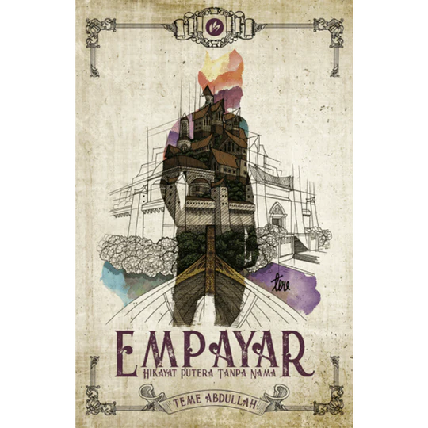

࿔˚⋆ MY IDOL ⋆˚࿔
Inspiration comes in many forms, and for me, it shines through one special people. He inspires me through words that touch my heart and encourage me to believe in myself no matter what challenges I face.

TEME ABDULLAH
Author | Artist | Architect | Motivational Figure
Author | Artist | Architect | Motivational Figure
WHO IS TEME ABDULLAH?📑
Malaysian author, artist, and architect known for his creativity, wisdom, and motivational influence. He began his journey sharing drawings and reflections online, capturing attention with his sincerity and humility. His decision to stay anonymous emphasizes his belief that one’s work and message matter more than fame or appearance.EDUCATION🎓
Teme studied architecture in the United Kingdom.VALUES & INSPIRATION⭑.ᐟ
Teme Abdullah inspires readers to believe in themselves, stay grounded, and pursue their dreams with passion through his works. He encourages creativity, kindness, and resilience, showing that success is built on purpose and sincerity.WHY HE INSPIRES ME ? ɞ✦ ┆・
Teme is widely recognized for his bestselling books, including Jalanan and Empayar, which blend themes of personal growth, perseverance, and hope. In addition to writing, he is an accomplished artist known for his detailed portraits, including drawings of Malaysian royalty that gained national attention.PROFESSIONAL WORK ᯓ★
Teme is widely recognized for his bestselling books, including Jalanan and Empayar, which blend themes of personal growth, perseverance, and hope. In addition to writing, he is an accomplished artist known for his detailed portraits, including drawings of Malaysian royalty that gained national attention.⁺˚⋆｡°✩ TEME ABDULLAH BOOKS ✩°｡⋆˚⁺

Selamat Tinggal Purnama 1

Selamat Tinggal Purnama 2

Kapal Terakhir di Dunia Ep 1

Kapal Terakhir di Dunia Ep 2

Kapal Terakhir di Dunia Ep 3

Penulis Jalanan

Signature Jalanan

Impian Jalanan

Arkitek Jalanan

Pelukis Jalanan

Empayar

Empayar 2

Empayar 3

Bayang Sofea

Rahsia Danny
‧₊˚🖇️✩ TEME PORTRAIT & DRAWINGS ₊˚✒️♡


"WORK SUPER HARD, BE INSPIRATIONAL. GENERATE PAHALA FROM THAT.
BUT DON'T EXPOSE YOURSELF TO PUBLIC. DO IT ANONYMOUSLY, AVOID RIAK.
ABOVE ALL, REMEMBER WHO YOU ARE!"